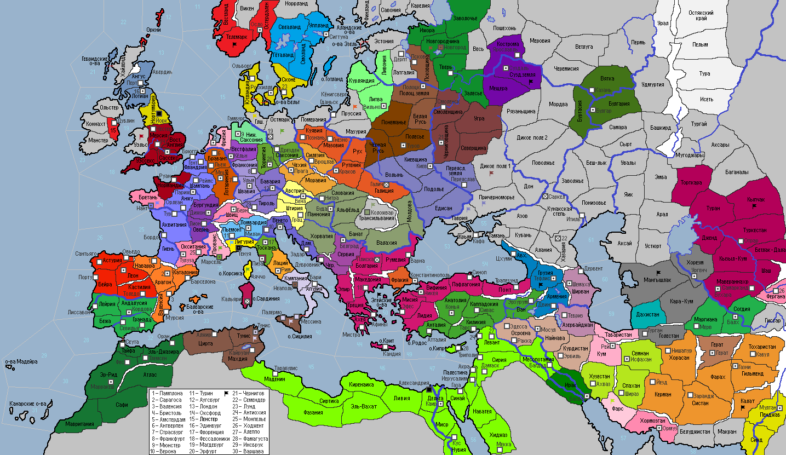

<== | 1 | | 2 | | 3 | | 4 | | 5 | | 6 | | 7 | | 8 | | 9 | | 10 | | 11 | | 12 | | 13 |
Великая схизма
В 9 веке произошёл раскол между константинопольской патриархией и папством. Борьба за влияние в христианском мире между патриархом и римским папой привела к конфликту в 1054 г. из-за поддельного документа, известного как Дарственная Константина. Патриарх и Папа Римский публично предали анафеме друг друга и признали еретическими догматы враждебных церквей. [-1 к стаб. у Папской области и Экзархате]
· Мингайло I из клана Адамайтисов возглавляет союз племен Литвы. Литовцы покидают Латгалию, уступив нажиму со стороны Полоцкого князя. · Мятежные эмира Бухары выступили с оружием в руках против власти Караханидов, но не смогли взять неприступные стены крепости Арк. С Хорезмом заключается оборонительный союз. Гуриды, признавая могущество караханидского правителя Улуг-хана, становятся вассалами, за что получают от ханских щедрот Маргиану. · В Арагоне происходит монетарная реформа. · Граф Бретани Хоэль I Толстый умирает, оставив править сына Эмерика. · Лотарингия заключает оборонительный союз с Францией. · Флот Зиридов захватывает столицу Апулийского герцогства – г.Неаполь. · Дикие мордвины атакуют Суздальскую землю и разбивают дружину полководца Романа! · Эмир Ширвана Мани подхватывает неизвестную хворь и умирает… В этом обвиняют зороастрийских колдунов Табаристана, что приводит к войне между странами. Ширванская армия вторгается в Табаристан, но проигрывает сражение силам бея Гюлуса I. · Белуджи Макрана вторгаются в газневидскую провинцию Калат! · Телемарк захвачен ударом северных саамов! · Робрехт I – новый граф Фризии. · Сунниты Фатимидского султаната начинают почитать дервишей. Буиды, признав свое поражение в войне, становятся вассалами фатимидов. Подавлены выступления рабов в г.Кус и Маденине. Фатимидская армия идет на помощь вассалу и наносит поражение мятежникам Ирака. · 10-ти летний Адальберт занимает кафедру архиепископа Вестфальского. «Это кощунство!» - вновь поднимает недовольный вой знать и духовенство Кёльна. Поднимается мятеж. Чтобы положить конец распрям, при посредничестве Папы Клемента II принимаются Кёльнские кондиции, провозглашающие создание Мюнстерского архиепископства. Все остались довольны. · Эмир Ферганы Музаффар трагически погибает под оползнем… Страна в трауре. · Мятеж рабов в Грузии! Регулярная армия грузин не смогла подавить мятеж. · Папа Климет II издает буллу «О престоле Св.Петра». Папа Климент II призывает короля Франции прекратить нападение на Бретань и обратить взор на государства света истинной веры не несущие. Если же увещевание сие не будет внемлено, то в 1060 году король будет предан анафеме. · Схизма привела к перестановкам во власти в Константинополе. Христофор Стратионик выбран новым епископом Константинопольского экзархата. · Король Швеции Стенкиль I умирает. Преемник не был назначен. В стране начинается смута из-за династического кризиса. · Великий князь Владислав I Киевский совершает победоносный поход в Таврию. · Роберт I умирает, завещая трон сыну Гвемару. Норманны высаживаются в провинции Тунис и захватывают столицу Зиридского маликата. · Дештиды объявляют войну Фарсу и разбивают армию врага · Даны переключились на грабеж побережья Ирландии. · Французы, наплевав на предостережение понтифика, продолжили войну с Бретанью. Король Луи II лично повел войска на штурм г.Нанта и в итоге добился успеха… · Новгородцы безуспешно атакуют варваров в Меровии. · Никейский базилевс Фотий Палеолог умирает в возрасте 80-ти лет. Продолжить династию было суждено его дочери Ангелине, вышедшей замуж за черниговского князя Всеслава I. Она, как любительница чистоты и порядка, развернула банное строительство на всей территории страны. · Гуридский эмир Сайф ведет войска на подавление восстания в Маргиане и доблестно проигрывает сражение. · Маргиана и Согдия образуют новое государство под началом согдийского военачальника Улдуз-бека. [новая фракция Тулунидов со столицей в г.Балх] · В провинции Кум окончательно побеждают сторонники присоединения к Табаристану. Султан Бюлент I бежит на родину, в Дахистан. · Полоцкий князь Илья Добрый умирает в возрасте 45-ти лет и был канонизирован православной церковью. Преемником правителя стал сын Богдан, прозванный Тишайшим. Однако, он объявляет войну Новгороду, ссылаясь на то, что «Меняйлов дом купил себе право княжить, а не получил его от Бога». Полоцие силы без боя берут под контроль Новгородчину и г.Новгород. · Император СРИ Сиджифредо заявляет о правах Империи на область Прованс, аргументируя свои притязания на старый договор времен Оттона I (оказавшийся искусной подделкой). Имперские войска громят провансальцев и захватывают г.Марсель. · Бургундия также заявляет свои права на Прованс, ссылаясь также на дарственную грамоту Оттона I (оказывается, выпуск этих манускриптов отлично наладила артель барселонских евреев) и объявляет войну южному соседу. Герцог Бертран I с этой целью отказывается от вассалитета Франции, но узнав, о том, что император его опередил, впал в истерику, закончившуюся сердечным приступом. Трон Бургундии занимает его сын Антуан I Нерасторопный, названный так за промедление в захвате Прованса. · В Генуе начинается гражданская война! Городская знать и беднота взяли в руки оружие, и, воспользовавшись тем, что ломбардцы вывели войска из города, пошли на штурм крепостных стен и овладели столицей. Небольшие отряды восставших, меж тем, атаковали лагерь ломбардцев и флорентийцев в Лигурии. Захватчики, хоть и взяли верх, но войска Ломбардии предпочли отступить на родину. Флот дожа во всеобщей суматохе захотел вывезти из города золотой запас республики, но был разбит мятежниками. · В Оксфорде открылась первая в средневековой Европе библиотека. · Король Польши Володимер I Хитрый умирает в 1055 году. Ему наследует 10-ти летний Павел. · Давид I продолжает правление клана МакКенна на престоле Шотландии. · Кочевники нападают на Мангышлак и разбивают армию хорезмшаха Ануш-тегина.